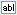
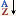

Once you have added a VIZNETDataBinder component to a graphic form and
associated it with a DataBinderDataBinders allow you to create a sub-set of the data contained within an OLE DB datasource to provide constant bi-directional communication with this database. This means that unlike the data returned by Select queries, this data can be viewed and/or modified and updated if it changes.,
other controls can access the data of the View and/or tables of this DataBinder
by being linked to the respective BindingSourceAllows other controls and components on the graphic form to access the data of their associated table or View. Typically created by the VIZNETDataBinder component for each table and View of its associated DataBinder. component.
A single View BindingSource
component, which ONLY allows its data to be viewed and not modified, which
adheres to the following naming convention:
bsView[OLE DB Datasource Name][DataBinderName]_[DataBinderName].
For instance: bsViewMyOLEDBMyDatBndr_MyDatBndr, where the datasource is
'MyOLEDB' and the DataBinder is 'MyDatBndr'.
A BindingSource component
for each table within this DataBinder, which allows both viewing and modification
of its data and adheres to the following naming convention:
Note: The following
procedure assumes that a VIZNETDataBinder component has been added to
this graphic form and associated it with a DataBinder.
Open the graphic form.
In the Toolbox
window, open the Window Forms
category and select the DataGridView
control.
Drag the pointer to define
the extent of this control.
The DataGridView Tasks
dialog is immediately displayed.
From the Choose
Data Source list box select the required BindingSource component.
Configure the checkboxes
to provide the appropriate levels of interactions that your users will
have with this data.
Click the Run
toolbar button of the graphic form to see that this control displays the
correct data.
Typically the DataGridView control is used to display all the fields
(columns) of a table in a database, so that its records can be displayed
in a spreadsheet-type manner.
Note: The following
procedure assumes that a VIZNETDataBinder component has been added to
this graphic form and associated it with a DataBinder.
Open the graphic form.
In the Toolbox
window, open the Window Forms
category and select the

TextBox
control.
Drag the pointer to define
the extent of this control.
Open the Properties
window and click on the

toolbar item to arrange the properties
alphabetically.
Expand the (DataBindings)
property that is at the top of this window
Select the Text
sub-property.
Click the button at the right of this field and select the required
BindingSource component from the list and its field that will be displayed
in this TextBox control.
Click the Run
toolbar button of the graphic form to see that this control displays the
correct data.
Typically the TextBox control is used to display the value of a selected
field (column) of a table in a database.
Note: The following
procedure assumes that a VIZNETDataBinder component has been added to
this graphic form and associated it with a DataBinder.
Open the graphic form.
In the Toolbox
window, open the Window Forms
category and select the ComboBox
control.
Drag the pointer to define
the extent of this control.
Click the icon to display the ComboBox
Tasks dialog.
heck the Use
data bound items checkbox to display and configure the following
data binding options:
Data
Source: Select the required BindingSource component from the list.
DisplayMember:
The name of the field, within the selected Data Source (BindingSource
component) that this ComboBox
control is required to select.
ValueMember:
An optional property that is best used when the field specified by the
DisplayMember is not descriptive
enough to be very user-friendly. In this case, the ValueMember
property can specify an associated field that contains suitably descriptive
values.
Selected
Value:An optional property to select the value from DisplayMember's
field that this ComboBox control
should display by default.
Click the Run
toolbar button of the graphic form to see that this control displays the
correct data.
Typically the ComboBox control (or ListBox control) is used to select
the index or key field (column) of a table in a database.

 ,
other controls can access the data of the View and/or tables of this DataBinder
by being linked to the respective BindingSource
,
other controls can access the data of the View and/or tables of this DataBinder
by being linked to the respective BindingSource The following BindingSource components are created:
The following BindingSource components are created: